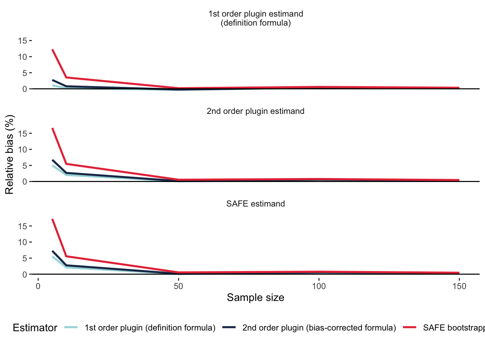
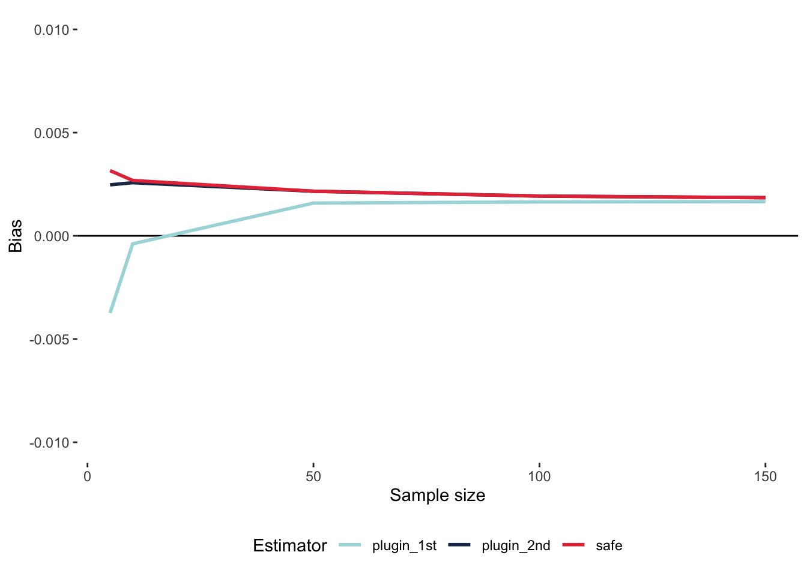
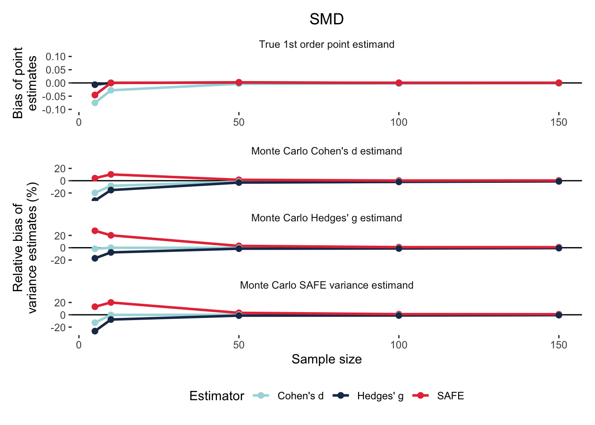

# First, clean the environment:
rm(list = ls())
# Now load packages:
# install.packages("groundhog")
library("groundhog")
groundhog.library(pkg = c("data.table", "MASS", "crayon",
"tmvtnorm", "here",
"parallel", "foreach", "doSNOW",
"ggplot2", "patchwork"),
date = "2025-04-15")SAFE simulations
step by step online tutorial
Introduction
If you have any questions, errors or bug reports, please feel free to contact Erick Lundgren (erick.lundgren@gmail.com).
The simulations take a long time to run on a personal computer. We have therefore uploaded all simulation results as .Rds files, though we show exactly how we ran the simulations.
To run the code interactively (instead of just reading this lovely tutorial), do the following:
- Clone the github repo: https://github.com/ejlundgren/SAFE.git
- Download the raw simulation from XXXXX and place one directory level above the github project repo.
- Run the code chunks in the SAFE simulations tutorial.qmd while in the R project session.
Load libraries
The groundhog package ensures that the library versions you use are the same as ours. You will need R version 4.5.0. Be sure to install groundhog if it is not already installed with install.packages().
Load encapsulated functions
We wrote a function to calculate effect sizes both with plugin estimators and with SAFE. This function can be sourced into the local environment. Let’s load the function and then calculate effect sizes, with SAFE, for several examples from the main text. The function is located in the github repo at tutorial/SAFE_function.R. This function returns a data.table (basically a fast data.frame) with columns for plugin effect sizes and sampling variances (denoted with _first or _second based on derivative order) and SAFE effect sizes and sampling variances (denoted with _safe). Point estimates (effect sizes) are denoted with yi_ while sampling variances are denoted with vi_.
# COMMENT OUT FOR RENDERING AND DELETE PRIOR TO PUBLICATION:
# setwd("tutorial")
source("SAFE_function.R")
# For a single effect size and sampling variance:
eff_size(x1 = 14.5, x2 = 7.9,
sd1 = 1.3, sd2 = 2,
n1 = 20, n2 = 20,
effect_type = "lnRoM",
SAFE = TRUE,
parallelize = TRUE)lnRoM cannot accept x1 or x2 ≤ 0. Leaving it to user's discretion to check prior to execution. Negative values will be returned as NA.
Using the formulas:
yi_first <- log(x1 / x2)
yi_second <- log(x1 / x2) + 0.5 * (sd1^2/(n1 * x1^2) - sd2^2/(n2 * x2^2))
vi_first <- sd1^2 / (n1 * x1^2) + sd2^2 / (n2 * x2^2)
vi_second <- sd1^2 / (n1 * x1^2) + sd2^2 / (n2 * x2^2) + 0.5 * ( (sd1^4 / (n1^2 * x1^4)) + (sd2^4 / (n2^2 * x2^4)))
Be sure that all variables in formula are correctly named.
SAFE: 1 / 1 yi_first yi_second vi_first vi_second yi_safe vi_safe SE_safe
<num> <num> <num> <num> <num> <num> <num>
1: 0.6072859 0.6058845 0.003606517 0.003611733 0.6058596 0.003637854 0.06031463Or with a vector of raw data:
eff_size(x1 = c(14.5, 13, 15.8),
x2 = c(7.9, 21, 18.4),
sd1 = c(1.3, 2, 1.9),
sd2 = c(2, 3.1, 1.4),
n1 = c(20, 20, 20),
n2 = c(20, 15, 18),
effect_type = "SMD",
SAFE = TRUE,
parallelize = TRUE)SMD can use normal or Wishart distribution to model variances. If unspecified with 'SAFE_distribution' argument, defaulting to Wishart Leaving it to user's discretion to check prior to execution. Negative values will be returned as NA.
Using the formulas:
yi_first <- (x1 - x2) / sqrt( ((n1 - 1) * sd1^2 + (n2 - 1) * sd2^2) / (n1 + n2 - 2) )
yi_second <- (1 - 3 / (4 * (n1 + n2 - 2) - 1) ) * ((x1 - x2) / sqrt( ((n1 - 1) * sd1^2 + (n2 - 1) * sd2^2) / (n1 + n2 - 2) ) )
vi_first <- ((n1 + n2) / (n1 * n2)) + ((x1 - x2) / sqrt( ((n1 - 1) * sd1^2 + (n2 - 1) * sd2^2) / (n1 + n2 - 2) ))^2 / (2 * (n1 + n2 - 2))
vi_second <- (1 - 3 / (4 * (n1 + n2 - 2) - 1) )^2 * ((n1 + n2) / (n1 * n2)) + ((x1 - x2) / sqrt( ((n1 - 1) * sd1^2 + (n2 - 1) * sd2^2) / (n1 + n2 - 2) ))^2 / (2 * (n1 + n2 - 2))
Be sure that all variables in formula are correctly named.
SAFE: 1 / 3
SAFE: 2 / 3
SAFE: 3 / 3 yi_first yi_second vi_first vi_second yi_safe vi_safe SE_safe
<num> <num> <num> <num> <num> <num> <num>
1: 3.912937 3.835196 0.3014615 0.2975274 3.821303 0.3649950 0.6041481
2: -3.167230 -3.094698 0.2686568 0.2633745 -3.410340 0.2529064 0.5028980
3: -1.545312 -1.512893 0.1387221 0.1343396 -1.540896 0.1406629 0.3750506For a full list of options that eff_size can calculate, please see information by running:
eff_size()
Must specify an effect size type ('effect_type') and necessary variables (named in arguments to function call) to match formula equations.
Returning effect size names & required variables for reference. name vars_required
<char> <char>
1: SMD x1, x2, sd1, sd2, n1, n2
2: SMD_paired x1, x2, sd1, sd2, r, n1, n2
3: lnCVR x1, x2, sd1, sd2, n1, n2
4: lnCVR_paired x1, x2, sd1, sd2, r, n1, n2
5: lnHWE_A n_AA, n_Aa, n_aa
6: lnM x1, x2, sd1, sd2, n1, n2
7: lnM_paired x1, x2, sd1, sd2, n1, n2, r
8: lnOR a, b, c, d
9: lnRR a, c, n1, n2
10: lnRoM x1, x2, sd1, sd2, n1, n2
11: lnRoM_paired x1, x2, sd1, sd2, r, n1, n2
12: reciprocal n, x, sdRun sample simulation
We simulated the bias of SAFE calculations versus normal plugin calculations for a variety of common, and less common, effect sizes. We did this across a range of input variables, particularly sample size. The creation of these scenarios differed for each effect size (based on input variables). The scenarios can be loaded as follows. Let’s look at the simulations for lnRoM:
scenarios <- readRDS("data/scenarios.Rds")
# Subset scenarios:
guide <- scenarios[effect_type == "lnRoM" & sample_size_ratio == 1, ]
guide[, .(effect_type, scenario_id,
true_mean1, true_mean2,
true_sd1, true_sd2,
sample_size1, sample_size2)] effect_type scenario_id true_mean1 true_mean2 true_sd1 true_sd2
<char> <char> <num> <num> <num> <num>
1: lnRoM lnRoM_scenario_3 13.4 16.1 4.6 3.9
2: lnRoM lnRoM_scenario_6 13.4 16.1 4.6 3.9
3: lnRoM lnRoM_scenario_9 13.4 16.1 4.6 3.9
4: lnRoM lnRoM_scenario_12 13.4 16.1 4.6 3.9
5: lnRoM lnRoM_scenario_15 13.4 16.1 4.6 3.9
sample_size1 sample_size2
<num> <num>
1: 5 5
2: 10 10
3: 50 50
4: 100 100
5: 150 150To evaluate effect size performance, we conducted Monte Carlo simulations for each scenario. In these simulations, we created simulated datasets based on true values for each scenario. We then calculated effect sizes and sampling variances (both with plugin formulas and SAFE) for the ‘true’ values and based on the simulated dataset. We did this 1e5 times for each scenario.
In these Monte Carlo simulation, we were interested in bias, or the difference between the ‘true’ estimands (i.e., sampling variance and effect sizes) and the estimates (of sampling variance and effect sizes) produced from various methods and applied to the simulated data. We’ll explain the difference between estimands, estimators, and estimates below.
To illustrate, we’ll do a dummy simulation for lnRoM. Note that the means/sd for each scenario are the same. The only variables that differ are sample sizes. To make this tractable, we’ll only run 100 simulations.
To speed things up we will do this in parallel. The function prepare_cluster() below can help set things up and provides a progress bar so you don’t lose your mind wondering what’s going on in there.
set.seed(2025)
# Prepare cluster:
prepare_cluster <- function(n){
require("parallel")
require("foreach")
require("doSNOW")
nCores <- parallel::detectCores() -1
cl <- makeCluster(nCores)
registerDoSNOW(cl)
# Progress bar
pb <- txtProgressBar(max = n, style = 3)
progress <- function(n) setTxtProgressBar(pb, n)
opts <- list(progress = progress)
ret <- list(opts, pb, cl)
names(ret) <- c("options", "progress", "cluster")
return(ret)
cat("Pass 'x$options' to .opts in foreach;
'x$progress' to setTxtProgressBar(x$progress, i);
'x$cluster' to stopCluster(x$cluster) after foreach")
}Now we will run 100 simulations to showcase how this method works. The actual simulations had a length of 1e5 and are loaded and visualized in Section XXXX. The first part of this code (inside the lapply) creates simulated data based on ‘true’ means and standard deviations. This data is then summarized to a simulation mean and standard deviation. We will then calculate effect sizes and sampling variances for the ‘true’ values and simulated values. Note that even with only 100 iterations, this can take a minute. Feel free to skip this step and load the actual 1e5 processed simulation in the subsequent code block.
rerun <- F
if(rerun){
clust_out <- prepare_cluster(n = 100)
res <- foreach(i = 1:100,
.options.snow = clust_out$options,
.errorhandling = "pass",
.packages = c("data.table", "MASS", "tmvtnorm")) %dopar% {
# Simulate data for each scenario in an lapply:
sim_dat <- lapply(1:nrow(guide), function(x){
# Simulate data for guide
sig <- diag(c(guide$true_sd1[x]^2,
guide$true_sd2[x]^2))
means <- c(m1 = guide$true_mean1[x],
m2 = guide$true_mean2[x])
y <- rtmvnorm(n = max(c(guide$sample_size1[x], guide$sample_size2[x])),
mean = means,
sigma = sig,
lower = rep(0, length(means)),
upper = rep(Inf, length(means)),
algorithm = "gibbs") |>
as.data.frame() |>
setDT()
names(y) <- c("m1", "m2")
# Filter to number of samples per treatment
sim_dat <- list(x1 = y[1:guide$sample_size1[x], ]$m1,
x2 = y[1:guide$sample_size2[x], ]$m2)
sim_dat <- data.table(sim_mean1 = mean(sim_dat$x1),
sim_mean2 = mean(sim_dat$x2),
sim_sd1 = sd(sim_dat$x1),
sim_sd2 = sd(sim_dat$x2),
sim_n1 = length(sim_dat$x1),
sim_n2 = length(sim_dat$x2))
return(sim_dat)
}) |> rbindlist()
#
true_point <- eff_size(x1 = guide$true_mean1, x2 = guide$true_mean2,
sd1 = guide$true_sd1, sd2 = guide$true_sd2,
n1 = guide$sample_size1, n2 = guide$sample_size2,
effect_type = "lnRoM",
SAFE = FALSE,
verbose = FALSE,
parallelize = FALSE,
SAFE_boots = 1e6)
setnames(true_point,
c("yi_first", "vi_first",
"yi_second", "vi_second"),
c("true_y_plugin_1st", "true_v_plugin_1st",
"true_y_plugin_2nd", "true_v_plugin_2nd"))
out <- eff_size(x1 = sim_dat$sim_mean1, x2 = sim_dat$sim_mean2,
sd1 = sim_dat$sim_sd1, sd2 = sim_dat$sim_sd2,
n1 = guide$sample_size1, n2 = guide$sample_size2,
effect_type = "lnRoM",
SAFE = TRUE,
verbose = FALSE,
parallelize = FALSE,
SAFE_boots = 1e6)
setnames(out,
c("yi_first", "vi_first",
"yi_second", "vi_second"),
c("sim_y_plugin_1st", "sim_v_plugin_1st",
"sim_y_plugin_2nd", "sim_v_plugin_2nd"))
# Store results:
results <- data.table(guide,
sim_dat,
true_point,
out)
setTxtProgressBar(clust_out$progress, i)
return(results)
}
stopCluster(clust_out$cluster)
res <- rbindlist(res)
}Load the final simulation (with 1e5 iterations) for lnRoM here:
scenario_id effect_type run_ID true_mean1 true_mean2 true_sd1
<char> <char> <char> <num> <num> <num>
1: lnRoM_scenario_1 lnRoM lnRoM_run1 13.4 16.1 4.6
2: lnRoM_scenario_1 lnRoM lnRoM_run1 13.4 16.1 4.6
3: lnRoM_scenario_1 lnRoM lnRoM_run1 13.4 16.1 4.6
true_sd2 sample_size1 sample_size_ratio sample_size2 sim_mean1 sim_mean2
<num> <num> <num> <num> <num> <num>
1: 3.9 5 0.6 3 12.80536 15.57313
2: 3.9 5 0.6 3 14.79994 17.96824
3: 3.9 5 0.6 3 15.82959 16.74330
sim_sd1 sim_sd2 true_y_plugin_1st true_y_plugin_2nd true_v_plugin_1st
<num> <num> <num> <num> <num>
1: 4.420781 3.264287 -0.1835646 -0.1815599 0.04312815
2: 6.106194 2.594294 -0.1835646 -0.1815599 0.04312815
3: 4.041201 4.835295 -0.1835646 -0.1815599 0.04312815
true_v_plugin_2nd sim_y_plugin_1st sim_y_plugin_2nd sim_v_plugin_1st
<num> <num> <num> <num>
1: 0.04359718 -0.19568322 -0.19108765 0.03848210
2: 0.04359718 -0.19398262 -0.18043457 0.04099359
3: 0.04359718 -0.05611709 -0.06349951 0.04083489
sim_v_plugin_2nd yi_safe vi_safe SE_safe
<num> <num> <num> <num>
1: 0.03887343 -0.19075138 0.04062773 0.2015632
2: 0.04159726 -0.17948460 0.04446871 0.2108760
3: 0.04130626 -0.06344918 0.04348882 0.2085397Calculate bias
To interpret the simulation results, it is essential to understand the difference between estimands, estimators, and estimates.
Estimands are the ‘true’ value.
Estimators are the methods used to estimate the estimand. What a tongue twister! In our case, the estimators are the 1st order effect size (e.g., definition formula), the 2nd order effect size that has been adjusted (usually using the delta method, except for Hedges’ g) to reduce bias, and the SAFE method.
Estimates are the estimates of the estimands produced by the estimators.
Effect size (point estimate) bias
In the case of our effect sizes, there are two estimands that we’re interested in estimating: the ‘true’ effect size (based on the definition formula of the effect size type) and sampling variance. To calculate the bias of our various estimators in estimating effect sizes, we calculate the mean of the estimates from each simulated dataset and subtract the estimand value (the true effect size off the ‘true’ values).
Here we will calculate bias in our estimates of effect sizes:
bias <- function(estimates, estimand){
return(mean(estimates) - unique(estimand))
}
point.bias <- res[, .(plugin_1st_bias = bias(sim_y_plugin_1st, true_y_plugin_1st),
plugin_2nd_bias = bias(sim_y_plugin_2nd, true_y_plugin_1st),
safe_bias = bias(yi_safe, true_y_plugin_1st)),
by = .(scenario_id, sample_size1, sample_size2)] |> unique()
head(point.bias) scenario_id sample_size1 sample_size2 plugin_1st_bias plugin_2nd_bias
<char> <num> <num> <num> <num>
1: lnRoM_scenario_1 5 3 3.989181e-04 0.002280239
2: lnRoM_scenario_2 5 4 -2.973280e-03 0.001671633
3: lnRoM_scenario_3 5 5 -5.319397e-03 0.000935872
4: lnRoM_scenario_4 10 6 1.402827e-03 0.002345248
5: lnRoM_scenario_5 10 8 8.916183e-05 0.002274825
6: lnRoM_scenario_6 10 10 -4.254343e-04 0.002538770
safe_bias
<num>
1: 0.002336165
2: 0.002193715
3: 0.001623817
4: 0.002371409
5: 0.002359481
6: 0.002648168# Melt this to make it plottable:
point.bias.long <- melt(point.bias,
id.vars = c("scenario_id", "sample_size1", "sample_size2"))
head(point.bias.long) scenario_id sample_size1 sample_size2 variable value
<char> <num> <num> <fctr> <num>
1: lnRoM_scenario_1 5 3 plugin_1st_bias 3.989181e-04
2: lnRoM_scenario_2 5 4 plugin_1st_bias -2.973280e-03
3: lnRoM_scenario_3 5 5 plugin_1st_bias -5.319397e-03
4: lnRoM_scenario_4 10 6 plugin_1st_bias 1.402827e-03
5: lnRoM_scenario_5 10 8 plugin_1st_bias 8.916183e-05
6: lnRoM_scenario_6 10 10 plugin_1st_bias -4.254343e-04# Sort by sample size
setorder(point.bias.long, sample_size1)
ggplot(data = point.bias.long[sample_size1 == sample_size2, ],
aes(x = sample_size1, y = value, color = variable))+
geom_hline(yintercept = 0)+
geom_path(linewidth = 1)+
xlab("Sample size")+
ylab("Bias")+
coord_cartesian(ylim = c(-0.01, 0.01))+
scale_color_discrete("Estimator",
labels = c("plugin_1st_bias" = "1st order plugin (definition formula)",
"plugin_2nd_bias" = "2nd order plugin (bias-corrected formula)",
"safe_bias" = "SAFE bootstrapping"))+
theme_bw()+
theme(panel.border = element_blank(),
panel.grid = element_blank(),
legend.position = "inside",
legend.position.inside = c(.75, .25))
This indicates that the least biased estimator is the first order definition formula. SAFE bootstrapping and the 2nd order plugin perform similarly.
Sampling variance bias
Interestingly, there is no way to know the ‘true’ estimand for sampling variance. WHICH I DON’T FULLY UNDERSTAND. To calculate bias for our sampling variance estimates, we actually calculate the variance in point estimates for each estimator and use each of these as the estimand. With 3 estimators, we’ll thus end up with 9 calculations of bias.
Since we’re interested in relative bias (Not entirely sure why), we’ll calculate bias as above but divide by the estimand and multiply by 100.
# First, calculate variance in point estimates as our 'estimand'
res[, var_estimand_1st := var(sim_y_plugin_1st),
by = .(scenario_id)]
res[, var_estimand_2nd := var(sim_y_plugin_2nd),
by = .(scenario_id)]
res[, var_estimand_SAFE := var(yi_safe),
by = .(scenario_id)]
# To make this easier to read, we'll encapsulate the relative bias in a function:
relative_bias <- function(estimates,
estimand){
return(((mean(estimates) - unique(estimand)) / estimand) * 100)
}
# Now summarize and calculate relative bias per scenario ID
var.bias <- res[, .(SAFE_estimate.1st_estimand = relative_bias(vi_safe, var_estimand_1st),
SAFE_estimate.2nd_estimand = relative_bias(vi_safe, var_estimand_2nd),
SAFE_estimate.SAFE_estimand = relative_bias(vi_safe, var_estimand_SAFE),
plugin_1st_estimate.1st_estimand = relative_bias(sim_v_plugin_1st, var_estimand_1st),
plugin_1st_estimate.2nd_estimand = relative_bias(sim_v_plugin_1st, var_estimand_2nd),
plugin_1st_estimate.SAFE_estimand = relative_bias(sim_v_plugin_1st, var_estimand_SAFE),
plugin_2nd_estimate.1st_estimand = relative_bias(sim_v_plugin_2nd, var_estimand_1st),
plugin_2nd_estimate.2nd_estimand = relative_bias(sim_v_plugin_2nd, var_estimand_2nd),
plugin_2nd_estimate.SAFE_estimand = relative_bias(sim_v_plugin_2nd, var_estimand_SAFE)),
by = .(scenario_id, sample_size1, sample_size2)] |> unique()
# Now melt:
var.bias.long <- melt(var.bias,
id.vars = c("scenario_id", "sample_size1", "sample_size2"))
head(var.bias.long) scenario_id sample_size1 sample_size2 variable
<char> <num> <num> <fctr>
1: lnRoM_scenario_1 5 3 SAFE_estimate.1st_estimand
2: lnRoM_scenario_2 5 4 SAFE_estimate.1st_estimand
3: lnRoM_scenario_3 5 5 SAFE_estimate.1st_estimand
4: lnRoM_scenario_4 10 6 SAFE_estimate.1st_estimand
5: lnRoM_scenario_5 10 8 SAFE_estimate.1st_estimand
6: lnRoM_scenario_6 10 10 SAFE_estimate.1st_estimand
value
<num>
1: 15.690315
2: 11.677590
3: 11.960961
4: 4.815807
5: 3.667076
6: 3.547004# Split the 'variable' into estimator and estimand for plotting
var.bias.long[, c("Estimator", "Estimand") := tstrsplit(variable, ".", fixed = TRUE)]
# Sort the dataset by sample size
setorder(var.bias.long, sample_size1)
# Plot
ggplot(data = var.bias.long[sample_size1 == sample_size2, ],
aes(x = sample_size1, y = value, color = Estimator))+
geom_path(linewidth = 1)+
geom_hline(yintercept = 0)+
xlab("Sample size")+
ylab("Relative bias (%)")+
scale_color_discrete("Estimator",
labels = c("plugin_1st_estimate" = "1st order plugin (definition formula)",
"plugin_2nd_estimate" = "2nd order plugin (bias-corrected formula)",
"SAFE_estimate" = "SAFE bootstrapping"))+
facet_wrap(~Estimand,
ncol = 1,
labeller = as_labeller(c("1st_estimand" = "1st order plugin estimand\n(definition formula)",
"2nd_estimand" = "2nd order plugin estimand",
"SAFE_estimand" = "SAFE estimand")))+
theme_bw()+
theme(panel.border = element_blank(),
panel.grid = element_blank(),
strip.background = element_blank(),
legend.position = "inside",
legend.position.inside = c(.8, .9))
We see here that SAFE is slightly more biased than the other estimators.
Plot all simulations results
Now let’s look at the rest of the simulation results. The summaries are saved as an .Rds in the ‘builds’ folder in the repo.
Reciprocal
1 / x

SMD 4-multivariate normal
The SAFE estimator for this effect size was calculated with a multivariate normal distribution for both mean and SD.

###SMD 2-multivariate normal and 2-Wishart With this estimator, the SAFE calculation used the normal distribution for the two means but the Wishart distribution to estimate the SD.

lnCVR 4-multivariate normal
The SAFE estimator for this effect size was calculated with a multivariate normal distribution for both mean and SD.

lnCVR 2-multivariate normal and 2-Wishart
The SAFE estimator for this effect size was calculated with a multivariate normal distribution for both mean and SD.

lnOR Binomial
In this effect size estimation, the SAFE calculation used a binomial distribution to draw random binomial samples for ‘a’ and ‘c’.

lnOR Normal
In this effect size estimation, the SAFE calculation used a normal distribution to draw ‘p1’ and ‘p2’ from which ‘a’ and ‘c’ were calculated. Something is still off…

lnRR Binomial
In this effect size estimation, the SAFE calculation drew ‘a’ and ‘c’ from a binomial distribution.

lnRR Normal
In this effect size estimation, the SAFE calculation drew ‘p1’ and ‘p2’ from a normal distribution.

Hardy Weinberg Disequilibrium
In this effect size estimation, the SAFE calculation drew ‘n_AA’, ‘n_Aa’, and ‘n_aa’ from a binomial distribution.